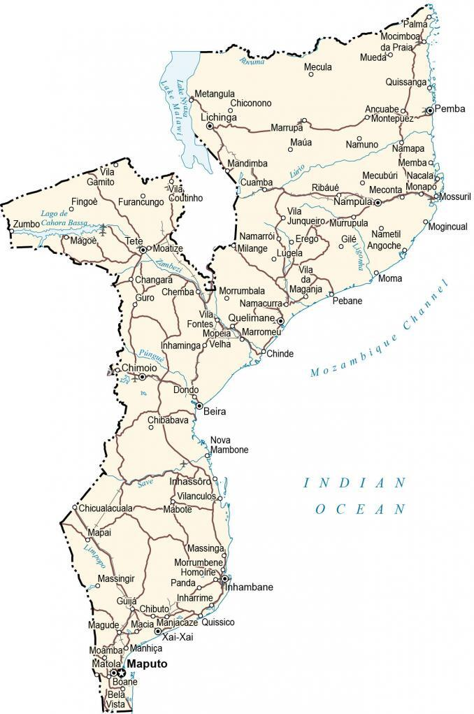

Mozambique is a southern African nation whose long Indian Ocean coastline is dotted with popular beaches like Tofo, as well as offshore marine parks. In the Quirimbas Archipelago, a 250km stretch of coral islands, mangrove-covered Ibo Island has colonial-era ruins surviving from a period of Portuguese rule. The Bazaruto Archipelago farther south has reefs which protect rare marine life including dugongs.
Mozambique is located in southern Africa, known for its coastline beaches, natural wildlife, and natural heritage. It borders six countries including Tanzania and Malawi to the north, Zambia to the northwest, Zimbabwe to the west, as well as Eswatini and South Africa to the southwest.
Go back home